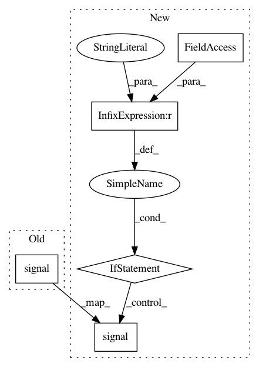

670de52f1f10afca228da22c97e56b1356e5172b,lib/streamlit/bootstrap.py,,_set_up_signal_handler,#,38
Before Change
signal.signal(signal.SIGTERM, signal_handler)
signal.signal(signal.SIGINT, signal_handler)
signal.signal(signal.SIGQUIT, signal_handler)
def _fix_sys_path(script_path):
Add the script"s folder to the sys path.
After Change
signal.signal(signal.SIGTERM, signal_handler)
signal.signal(signal.SIGINT, signal_handler)
if sys.platform == "win32":
signal.signal(signal.SIGBREAK, signal_handler)
else:
signal.signal(signal.SIGQUIT, signal_handler)
def _fix_sys_path(script_path):
Add the script"s folder to the sys path.
Python normally does this automatically, but since we exec the script
In pattern: SUPERPATTERN
Frequency: 4
Non-data size: 5
Instances
Project Name: streamlit/streamlit
Commit Name: 670de52f1f10afca228da22c97e56b1356e5172b
Time: 2019-09-19
Author: root92@live.de
File Name: lib/streamlit/bootstrap.py
Class Name:
Method Name: _set_up_signal_handler
Project Name: ilastik/ilastik
Commit Name: ec7659c20598f1f6cfa9e9358796518b91a6678b
Time: 2012-10-15
Author: bergs@janelia.hhmi.org
File Name: ilastik/shell/headless/startShellHeadless.py
Class Name:
Method Name:
Project Name: ray-project/ray
Commit Name: 895872813936b1148296a1c3980b0d82ddfb2039
Time: 2020-03-30
Author: mehrdadn@users.noreply.github.com
File Name: python/ray/ray_process_reaper.py
Class Name:
Method Name: reap_process_group
Project Name: BYU-PCCL/holodeck
Commit Name: ae0bec7d237ff5ef6bdec833620501bfb8bc86d7
Time: 2020-05-29
Author: daniekpo@gmail.com
File Name: src/holodeck/environments.py
Class Name: HolodeckEnvironment
Method Name: __init__